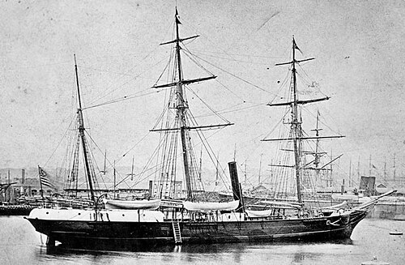

DOSSIER M19 // ARCTIC OCEAN // 1879–81
USS Jeannette and the drifting Arctic ice
[ MARITIME & GEOGRAPHIC MYSTERIES // POLAR ]


Event and chronology
The U.S. Navy vessel Jeannette sailed north from San Francisco in 1879 and became trapped in ice north of Siberia. The ship was crushed and sank in 1881. De Long’s party crossed the ice toward the Lena Delta; many died, while survivors returned with journals and testimony.
What later accounts allege
The expedition is sometimes used to support claims of hidden polar lands, supernatural magnetic zones or government suppression of an Arctic discovery. The ship’s prolonged silence is interpreted without regard to nineteenth-century communications and geography.
Records, searches and conditions
De Long’s recovered journals, Navy expedition reports and congressional documentation record the ship’s position, sinking, ice journey and rescue. The accounts are direct evidence for the final expedition, although not all party members survived to describe their own fate.
Independent and contrary evidence
The loss occurred in an environment where ice can trap and crush wooden ships, and the party’s route was documented by physical evidence and survivors. Later recovered expedition artifacts far downstream help corroborate drift rather than a hidden landmass or anomalous force.
What remains unknown
Several people died without a witness to their last moments, and the exact movement of the ice and bodies is not fully known. The expedition was constrained by obsolete assumptions about ocean currents and polar routes; the record does not support the existence of a concealed continent.
Assessment
The disaster is tragic but consistent with known Arctic ice dynamics. A verifiable geological discovery or authenticated records contradicting the recovered journals would change particular details; unresolved deaths do not establish a paranormal or secret geographic explanation.
Sources and limits
- Library of Congress — The Voyage and Adventures of the Jeannette (1883)Digitized congressional account includes journals and testimony; evidence is limited to surviving records.
- Smithsonian Institution — Jeannette expedition publication recordCase-specific institutional record helps locate expedition documents; it cannot account for every party member’s final moments.
- George W. De Long — The Voyage of the JeannetteSearch restricted to editions of the named primary narrative; De Long’s diary ends before the party’s later fate.